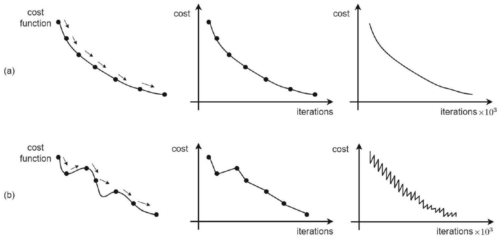
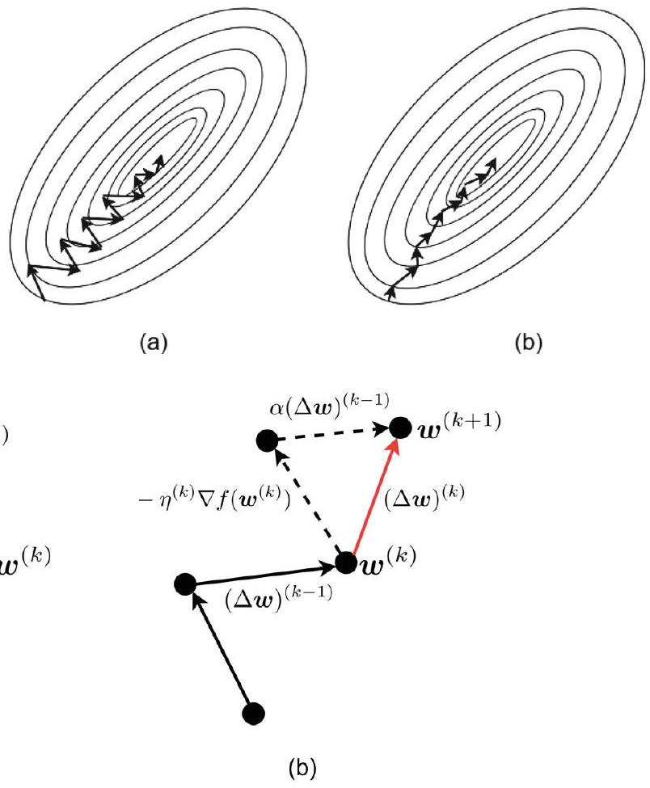
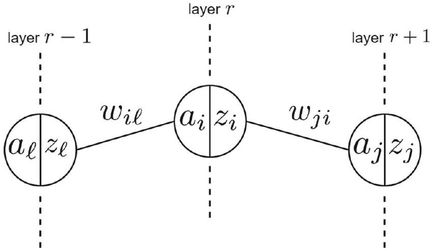
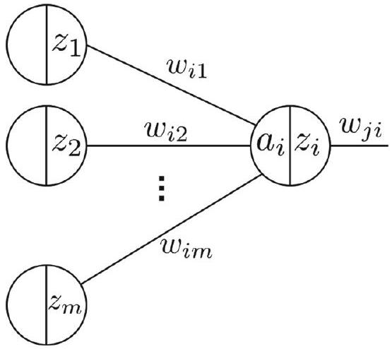
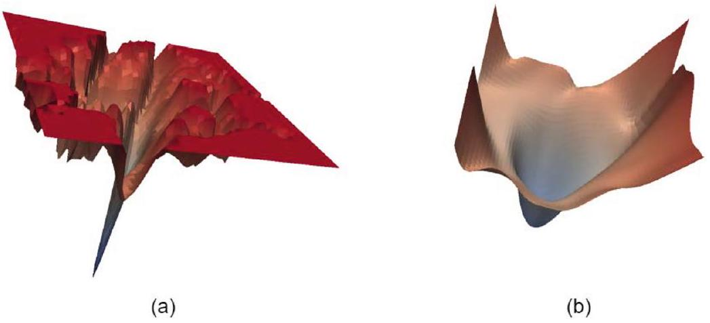
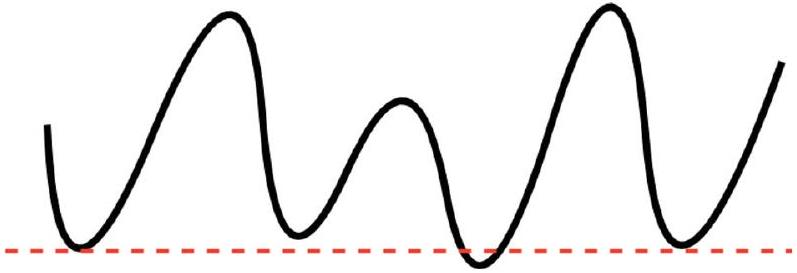

導論：優化作為深度學習的核心
▼這一章在講什麼：優化才是訓練神經網路的引擎
還記得 Chap. 1 說過，任何機器學習演算法都可以拆成三個基本步驟嗎？這一章就專攻第三步——怎麼在一大堆可能的模型裡，找到最好的那一個：
- 提出假設類別（hypothesis class）：先決定你要用什麼樣的模型家族，例如多層神經網路。
- 用損失函數排名（loss function）：定義「猜錯多少要付多少代價」，讓好模型和壞模型有分數可比。
- 搜尋最佳假設（optimization / search）：調整參數，把損失壓到最低——這就是本章的主角。
在深度學習裡，這個搜尋過程等於在一個高維、常常是非凸（non-convex）的損失地形上爬山（其實是下山）。概念上很簡單——最小化損失函數——但實務上超難：模型可能有好幾層、幾百萬個參數，地形坑坑洞洞，到處是局部最低點。
突破關鍵：反向傳播（backpropagation）
梯度下降這個概念本身不新，但多層網路一開始沒人知道怎麼算梯度：中間某一層的權重，到底怎麼影響最後的損失？反向傳播演算法解決了這個難題——它用鏈式法則（chain rule）一層一層往回遞推，高效算出整個網路所有參數的梯度。沒有 backprop，深度學習根本訓不起來。
一階 vs 二階：為什麼實務上選梯度下降
二階方法（例如 Newton 法）理論上局部收斂更快，但要算、還要反轉 Hessian 矩陣，在深度學習的規模下算力完全扛不住。而且實驗上還有個有趣現象：一階方法（尤其隨機版）常常找到比較平坦的局部最低點，泛化比較好；二階方法反而可能鑽進很尖的最低點，泛化較差——原因還在研究中，但實務上一階梯度下降就是訓練大規模神經網路的主力。
本章路線圖：先地基，再進階
跟著這張地圖走就不會迷路：
- §2 梯度下降基礎（含線搜索、最陡下降）：先把「怎麼沿梯度更新參數」這套工具學紮實。
- §3 反向傳播（本章核心）：backprop 怎麼把梯度下降 + 鏈式法則組合在一起——必讀、必懂。
- §4 隨機與 mini-batch 梯度下降：資料太大時怎麼近似梯度、加速訓練。
- §5 自適應學習率（AdaGrad、RMSProp、Adam）：學習率不用手調那麼痛苦。
- §6 Sharpness-Aware Minimization（SAM）：進階技巧，找更平坦的最小值。
- §7 收斂理論：過參數化網路下的優化行為，給想挖理論的人。
口語小結：訓練神經網路 = 最小化損失；最小化損失 = 優化問題；backprop 讓多層網路能算梯度；一階方法在實務上贏了二階方法。 接下來 kp2 就從最基礎的梯度下降公式講起。
🤖 AI 生圖提示詞
WHAT（骨架）: 自上而下四層章節地圖。最上層三個機器學習步驟橫列，第三步「搜尋最佳假設」用粗藍框高亮。從第三步分岔：左側紅色死路 Newton（Hessian 方陣＋大叉），右側綠色一階梯度下降。綠色路徑下方是由低到高的五站階梯：GD → backprop → SGD → adaptive → SAM+theory。最底並列尖針曲線與淺碗曲線，標「fast ≠ good」。 WHY（因果或反直覺）: 本章專攻機器學習第三步——在損失地形上搜尋。二階 Newton 理論上局部更快，但 Hessian 在深度網路規模下算不動，是死路；實務主力是一階梯度下降。反直覺：走得快不等於泛化好——二階常鑽進尖銳最低點，一階隨機方法反而常停在較平坦的碗裡。 MUST show（必備要素）: ① 三步驟橫列且只有第三步高亮；② Newton 紅死路與大叉；③ 一階 GD 綠通路；④ 五站階梯依高度遞增；⑤ 尖針 vs 淺碗兩條損失曲線；⑥ 「fast ≠ good」轉折句；⑦ 由第三步指向分岔的箭頭。 AVOID（禁止）: 不要畫成編號圓圈串成的流程圖；不要出現 LaTeX 反斜線；不要把 Newton 畫成成功路徑；不要讓五站等高並排；不要漏掉尖針與淺碗對比。 STYLE: flat vector, viewBox 720×360, blue theme (#1e40af 深、#2563eb 主、#dbeafe 淺), 白底, Arial, 紅死路 #e53e3e、綠通路 #16a34a、橘警示 #ea580c, 圓角、粗箭頭、無陰影、無漸層。
機器學習三個步驟中，本章聚焦的是哪一步？
反向傳播解決的核心難題是？
深度學習實務上偏好一階方法而非二階方法，主要原因不包括？
本章核心必讀內容與進階補充的正確對應是？
梯度下降：學習率與更新規則
▼梯度下降：沿著最陡的下坡方向走
反向傳播和很多神經網路優化演算法，底層都靠一階優化方法，其中最經典的就是梯度下降（gradient descent）。歷史上 Cauchy（1874）最早提出這個想法，Hadamard（1908）加以精煉，Curry（1944）分析收斂性。因為 backprop = 梯度下降 + 鏈式法則，我們先從梯度下降本身學起。
問題設定：最小化可微函數
給一個可微函數 $f(\cdot)$，要對變數 $\boldsymbol{w}$ 做最小化（式 (1)）：
$$ \underset{\boldsymbol{w}}{\operatorname{minimize}} f(\boldsymbol{w}) . \tag{1} $$
數值優化從隨機選的初始點 $\boldsymbol{w}^{(0)}$ 出發，每一步加一個更新量 $\boldsymbol{\Delta}\boldsymbol{w}$（式 (2)）：
$$ \boldsymbol{w}^{(k+1)}:=\boldsymbol{w}^{(k)}+\boldsymbol{\Delta}\boldsymbol{w} . \tag{2} $$
一直迭代，直到收斂（或夠接近）最優解 $\boldsymbol{w}^{*}$。
L-smooth 與理想步長
假設 $f(\boldsymbol{w})$ 的梯度是 $L$-smooth（$L$ 是 Lipschitz 常數），代表梯度不會變化太劇烈。在這個設定下，更新規則變成（式 (3)）：
$$ \boldsymbol{\Delta}\boldsymbol{w}=-\frac{1}{L}\nabla f\left(\boldsymbol{w}^{(k)}\right) \Longrightarrow \boldsymbol{w}^{(k+1)}:=\boldsymbol{w}^{(k)}-\frac{1}{L}\nabla f\left(\boldsymbol{w}^{(k)}\right) . \tag{3} $$
白話：沿著梯度的反方向走，步長取 $1/L$，就能保證每步都讓目標函數下降。
學習率 $\eta$：實務上的固定步長
問題來了——$L$ 常常不知道、也算不出來。所以實務上改用固定的正步長 $\eta\gt 0$，也就是大家熟悉的學習率（learning rate）（式 (4)）：
$$ \boldsymbol{\Delta}\boldsymbol{w}=-\eta\nabla f\left(\boldsymbol{w}^{(k)}\right), \quad \text{i.e.,} \quad \boldsymbol{w}^{(k+1)}:=\boldsymbol{w}^{(k)}-\eta\nabla f\left(\boldsymbol{w}^{(k)}\right) . \tag{4} $$
$\eta$ 太大可能震盪甚至發散，太小則收斂龜速——調學習率是訓練神經網路最常見的頭痛之一。若是最大化問題，步長改成 $+\eta$，就叫梯度上升（gradient ascent）。
學習率也可以用線搜索（line search）來選，傳統優化常用，深度學習較少——kp4 會細講。
凸 vs 非凸：收斂到哪裡不一樣
- 凸（convex）目標：迭代序列 $\{\boldsymbol{w}^{(k)}\}$ 收斂到全域最低點 $\boldsymbol{w}^{*}$，而且目標值單調遞減： $$ \left\{\boldsymbol{w}^{(0)}, \boldsymbol{w}^{(1)}, \boldsymbol{w}^{(2)}, \ldots\right\} \rightarrow \boldsymbol{w}^{*}, \quad f\left(\boldsymbol{w}^{(0)}\right) \geq f\left(\boldsymbol{w}^{(1)}\right) \geq f\left(\boldsymbol{w}^{(2)}\right) \geq \cdots \geq f\left(\boldsymbol{w}^{*}\right) . $$
- 非凸（non-convex）目標：只能保證收斂到局部最低點。但別灰心——如 Fig. 1 所示，梯度下降在非凸地形上仍然表現不錯：雖然可能來回震盪，整體 loss 還是傾向下降。深度學習的 loss 幾乎都是非凸的，這正是為什麼我們需要 momentum、Adam 等進階技巧（後面章節會講）。
口語復盤：梯度下降就是「看現在坡度最陡往哪、就反方向走一步」；理想步長是 $1/L$，實務上用學習率 $\eta$ 代替；凸函數找全域最優，非凸只能找局部最優但通常夠用。

🤖 AI 生圖提示詞
WHAT（骨架）: 左右對比損失地形。左：凸問題，一組同心橢圓等高線，起點紅點沿平滑軌跡走到中心綠點全域最低；在軌跡上畫一對反向箭頭（藍梯度 ∇f vs 綠更新 −η∇f）。右：非凸波浪等高線，路徑鋸齒前進，停在局部最低綠點，另標橘色鞍點。底部兩條 loss-vs-iter 折線：左單調下降、右震盪下降。 WHY（因果或反直覺）: 梯度下降永遠沿最陡上坡的反方向走。凸地形保證走到全域最低且 loss 單調降；非凸只能保證局部最低。反直覺：深度學習幾乎全是非凸，路徑會左右晃，但整體 loss 仍傾向下降——「震盪 ≠ 失敗」。 MUST show（必備要素）: ① 左側同心橢圓與紅起點→綠全域最低軌跡；② 梯度與更新方向相反的成對箭頭；③ 右側波浪路徑鋸齒走到局部最低；④ 橘色鞍點；⑤ 底部兩條 loss-vs-iter 折線對比單調 vs 震盪；⑥ 凸 / 非凸標題。 AVOID（禁止）: 不要畫成編號圓圈；不要出現 LaTeX 反斜線；不要讓左右兩側看起來一樣凸；不要漏掉鞍點；不要把更新箭頭畫成與梯度同向。 STYLE: flat vector, viewBox 720×360, blue theme (#1e40af 深、#2563eb 主、#dbeafe 淺), 白底, Arial, 紅起點 #e53e3e、綠最低 #16a34a、橘鞍點 #ea580c, 圓角、粗箭頭、無陰影、無漸層。
- 拉 η 與起點，按「走一步」沿 $-\nabla f$ 更新。
- 把 η 拉到 1.0、起點 4，觀察震盪。
式 (4) 梯度下降更新 $\boldsymbol{w}^{(k+1)}:=\boldsymbol{w}^{(k)}-\eta\nabla f(\boldsymbol{w}^{(k)})$ 中，$\eta$ 代表什麼？
若 $f(\cdot)$ 的梯度是 $L$-smooth，理想步長應取？
對凸目標函數 $f(\cdot)$，梯度下降的保證是？
非凸 loss 地形上，梯度下降的實務表現如何？
收斂準則：什麼時候該停
▼收斂準則：優化演算法什麼時候該喊停
梯度下降和其他數值優化方法一樣，不能無限跑下去——需要收斂準則（convergence criteria）來決定「夠好了，可以停」。以下是幾種常用判斷方式：
1. 梯度范數夠小
看更新後梯度的 $\ell_2$ 范數是否小於門檻 $\epsilon$：
$$ \left\|\nabla f\left(\boldsymbol{w}^{(k+1)}\right)\right\|_{2} \leq \epsilon, $$
其中 $\epsilon$ 是很小的正數。直覺來自一階最優性條件：在局部最優點 $\boldsymbol{w}^{*}$ 處，$\left\|\nabla f\left(\boldsymbol{w}^{*}\right)\right\|_{2}=0$——梯度為零代表「沒有下降方向了」。
⚠️ 非凸陷阱：在非凸設定下，這個準則可能讓你停在鞍點（saddle point）——梯度也是零，但不是真正的最低點。深度學習 loss 地形鞍點很多，實務上要搭配其他準則或技巧。
2. 目標函數（cost）變化夠小
看連續兩步的 loss 差值是否夠小：
$$ \left|f\left(\boldsymbol{w}^{(k+1)}\right)-f\left(\boldsymbol{w}^{(k)}\right)\right| \leq \epsilon . $$
意思是「再迭代也降不了多少了」，適合 loss 已經磨到很平的情況。
3. 梯度本身的變化夠小
也可以看梯度向量前後兩步的差：
$$ \left|\nabla f\left(\boldsymbol{w}^{(k+1)}\right)-\nabla f\left(\boldsymbol{w}^{(k)}\right)\right| \leq \epsilon . $$
梯度不再大幅改變，代表優化方向趨於穩定。
4. 達到最大迭代次數
最簡單也最常用：預先設好最大迭代次數（max iterations），到了就停。深度學習訓練通常用 epoch 數或 step 數來控制，本質上就是這一條——不管有沒有「數學上收斂」，時間到了就停，拿當前的 $\boldsymbol{w}$ 當結果。
口語小結
| 準則 | 白話意思 | 注意事項 |
|---|---|---|
| 梯度范數 $\leq \epsilon$ | 「坡度夠平了」 | 非凸可能卡在鞍點 |
| cost 變化 $\leq \epsilon$ | 「loss 降不動了」 | 可能還沒到真正最優 |
| 梯度變化 $\leq \epsilon$ | 「方向穩定了」 | 較少單獨使用 |
| 最大迭代次數 | 「時間到，收工」 | 深度學習最常用 |
實務上常常組合使用：例如「loss 連續 N 步變化小於 $\epsilon$ 或 跑滿 100 epoch 就停」。kp4 會看到線搜索版梯度下降在內層調步長、外層檢查收斂的完整流程。
🤖 AI 生圖提示詞
WHAT（骨架）: 上方四個停錶儀表橫列：(1) 梯度范數指針靠近零，旁有紅警告「鞍點也是零」；(2) loss 曲線磨平、差值小於 ε；(3) 兩支梯度箭頭幾乎重合表示變化夠小；(4) 沙漏標 max iter。下方一張馬鞍曲面：中央橘鞍點、兩側綠最低點，一條逃逸箭頭從鞍點滑向最低點。 WHY（因果或反直覺）: 優化必須有停表條件。梯度為零來自一階最優性，但非凸時鞍點梯度也是零——這是最危險的誤判。實務上深度學習最常用的其實是最粗糙的那條：epoch 到了就停。反直覺：數學上「坡度夠平」不一定代表找到最低點。 MUST show（必備要素）: ① 四個儀表並列且各有名稱；② 梯度范數儀表旁紅色鞍點警告；③ loss 磨平、梯度變化、沙漏 max iter；④ 底部馬鞍曲面含橘鞍點與兩側綠最低；⑤ 從鞍點逃出的箭頭；⑥ 底部反直覺句。 AVOID（禁止）: 不要畫成編號圓圈；不要出現 LaTeX 反斜線；不要把鞍點畫成最低點；不要漏掉紅色警告；不要只畫一個準則。 STYLE: flat vector, viewBox 720×360, blue theme (#1e40af 深、#2563eb 主、#dbeafe 淺), 白底, Arial, 紅警告 #e53e3e、綠最低 #16a34a、橘鞍點 #ea580c, 圓角、粗箭頭、無陰影、無漸層。
一階最優性條件 $\|\nabla f(\boldsymbol{w}^{*})\|_2=0$ 對應哪種收斂準則的動機？
在非凸設定下，僅用「梯度范數 $\leq \epsilon$」停表，可能發生什麼問題？
$|f(\boldsymbol{w}^{(k+1)})-f(\boldsymbol{w}^{(k)})|\leq\epsilon$ 這條準則代表？
深度學習訓練中最常見的停表方式是？
線搜索與最陡下降
▼線搜索：每一步自動找合適的步長
式 (3) 的理想步長是 $1/L$，但 $L$ 常常未知。線搜索（line search） 的做法是：每一步動態調整步長 $\eta$，直到找到能讓 loss 下降的步長。
流程很直覺（Algorithm 1）：
- 每輪迭代從初始步長 $\eta=1$ 開始。
- 檢查線搜索條件（式 (5)）——更新後 loss 是否下降： $$ f\left(\boldsymbol{w}^{(k)}-\eta\nabla f\left(\boldsymbol{w}^{(k)}\right)\right)\lt f\left(\boldsymbol{w}^{(k)}\right), \tag{5} $$
- 若不滿足，步長減半：$\eta \leftarrow \eta/2$，再檢查。
- 重複直到式 (5) 成立，然後用這個 $\eta$ 做更新：$\boldsymbol{w}^{(k+1)}:=\boldsymbol{w}^{(k)}-\eta\nabla f\left(\boldsymbol{w}^{(k)}\right)$。
為什麼減半到夠小就一定會成功？因為當 $\eta$ 足夠小時（式 (6)）：
$$ \eta\lt \frac{1}{L}, $$
就能保證下降。線搜索會在內層迴圈反覆縮步長，直到找到滿足條件的 $\eta$——所以每個梯度下降迭代裡面，還包了一個調步長的內層迴圈。
進階線搜索：Armijo 與 Wolfe
上面這種「不滿足就減半」是最簡單的 backtracking 策略。更進階的方法包括：
- Armijo 規則（又稱 backtracking line search）：用一個更精確的「充分下降」條件來判斷步長夠不夠。
- Wolfe 條件：同時要求 loss 下降且步長不會太小（避免步長縮到幾乎不動）。
這些在傳統優化教科書裡很常見，深度學習實務較少用固定學習率或自適應方法代替。
最陡下降：沿梯度方向走最遠
最陡下降（steepest descent） 和梯度下降方向相同（都是 $-\nabla f$），但步長策略不同——不是固定 $\eta$，也不是減半試探，而是每一步解一個一維優化，找沿梯度方向能讓 $f$ 降最多的步長（式 (7)）：
$$ \eta^{(k)}:=\arg\min_{\eta} f\left(\boldsymbol{w}^{(k)}-\eta\nabla f\left(\boldsymbol{w}^{(k)}\right)\right) . \tag{7} $$
找到最優步長 $\eta^{(k)}$ 後，更新方式和梯度下降一樣：
$$ \boldsymbol{w}^{(k+1)}:=\boldsymbol{w}^{(k)}-\eta^{(k)}\nabla f\left(\boldsymbol{w}^{(k)}\right) . $$
白話對比：
| 方法 | 步長怎麼定 | 特色 |
|---|---|---|
| 固定學習率 GD | $\eta$ 固定 | 最簡單，深度學習最常用 |
| 線搜索 GD | 從 $\eta=1$ 開始，不滿足就減半 | 保證每步下降，但有內層迴圈 |
| 最陡下降 | 每步解一維 min（式 (7)） | 每步下降最多，但每步要多算 |
口語復盤
線搜索像「試走看，走太大就縮半步再試」；最陡下降像「沿這個方向精算最遠能走多遠」。兩者都比固定 $\eta$ 聰明，但每步計算成本更高——深度學習資料量大、參數多，所以寧可固定或自適應學習率，也不常做完整線搜索。理解它們有助於搞懂「步長選擇」這個優化的基本功。
🤖 AI 生圖提示詞
WHAT（骨架）: 左：一維損失切片對步長 η，三個試探點 η=1 紅點在損失上方（拒絕）、η=1/2 橘點仍略高（再減半）、η=1/4 綠點掉到當前損失虛線之下（接受）。右：內層迴圈流程圖——取 η=1 → 檢查下降？→ 否就 η←η/2 回饋再試 → 是才更新 w。底部反直覺橫幅。 WHY（因果或反直覺）: 理想步長 1/L 通常未知，線搜索從 η=1 開始，不下降就減半，直到更新後損失低於當前值。每個梯度下降迭代裡面還包一個調步長內層迴圈。反直覺：η=1 看起來最大膽，卻常常被拒絕；縮到夠小反而保證成功——「敢走」不如「肯縮」。 MUST show（必備要素）: ① 左側 1D 損失曲線與 η 軸；② 紅 / 橘 / 綠三點對應 1、1/2、1/4；③ 當前損失水平虛線；④ 右側內層迴圈含減半回饋箭頭；⑤ accept / reject 標籤；⑥ 底部反直覺句。 AVOID（禁止）: 不要畫成編號圓圈；不要出現 LaTeX 反斜線；不要把 η=1 畫成接受；不要漏掉減半回饋迴圈；不要讓三個點的損失高低順序顛倒。 STYLE: flat vector, viewBox 720×360, blue theme (#1e40af 深、#2563eb 主、#dbeafe 淺), 白底, Arial, 紅拒絕 #e53e3e、橘再試 #ea580c、綠接受 #16a34a, 圓角、粗箭頭、無陰影、無漸層。
線搜索式 (5) 的條件 $f(\boldsymbol{w}^{(k)}-\eta\nabla f(\boldsymbol{w}^{(k)}))\lt f(\boldsymbol{w}^{(k)})$ 要求什麼？
線搜索中步長不滿足條件時，採取的策略是？
最陡下降（式 (7)）與固定學習率梯度下降的主要差異是？
Armijo 規則屬於哪類方法？
動量 (Momentum)：加速收斂、減少震盪
▼梯度下降太「短視」？加一點慣性
純梯度下降每一步只看當下的梯度方向，在狹長的 loss 山谷裡容易左右來回震盪、走得很慢。動量（Momentum） 是 Rumelhart 等人提出的一招改良：不只信現在的梯度，還保留一部分上一步更新的方向，讓優化路徑更平滑、收斂更快。
核心更新：式 (8)
把原本式 (4) 的「只看當前梯度」改成「歷史 + 當前梯度」：
$$ (\Delta \boldsymbol{w})^{(k)}:=\alpha(\Delta \boldsymbol{w})^{(k-1)}-\eta^{(k)} \nabla f\left(\boldsymbol{w}^{(k)}\right), \tag{8} $$
其中 $\alpha\gt 0$ 是動量係數，控制「上一動保留多少」。參數更新仍是：
$$ \boldsymbol{w}^{(k+1)}:=\boldsymbol{w}^{(k)}+(\Delta \boldsymbol{w})^{(k)} . $$
直覺：像推球下山
- 沒有動量：球每步只被當前坡度推一下，在窄谷兩側來回彈，像醉漢走路。
- 有動量：球帶著慣性往前滾，沿山谷方向累積速度，側向震盪被平均掉，整體路徑更直、更快。
圖 (Fig. 2) 對比了有無動量的等高線軌跡；圖 (Fig. 3) 用向量加法說明：$\alpha(\Delta \boldsymbol{w})^{(k-1)}$ 與 $-\eta^{(k)}\nabla f$ 合成後，側向分量互相抵消，前進分量被保留。
什麼時候特別有用
- loss 曲面呈狹長山谷（ravine）時，純 GD 會在兩側來回；
- 梯度方向步與步之間變化劇烈時，動量能平滑更新；
- 後面 RMSProp、Adam 等也借鑑了「累積歷史資訊」這個思路（見 §5）。
一句話：動量 = 梯度下降 + 慣性，讓優化不只「看腳下」，還「記得剛才往哪走」。

🤖 AI 生圖提示詞
WHAT（骨架）: 左右同一組狹長山谷等高線。左：無動量，紅色鋸齒在谷壁來回彈。右：有動量，綠色平滑軌跡沿谷底前進。底部向量加法：紅箭頭當前梯度、藍箭頭歷史慣性、兩者合成幾乎水平的紫箭頭（側向抵消、前進保留）。 WHY（因果或反直覺）: 純梯度下降每步只看當下坡度，在 ravine 裡會左右震盪。動量保留上一步方向，側向分量互相抵消、沿谷方向累積速度。反直覺：多看「過去」不是拖慢，而是讓路更直、更快——慣性把晃動平均掉。 MUST show（必備要素）: ① 左右同一套狹長橢圓等高線；② 左紅鋸齒無動量路徑；③ 右綠平滑有動量路徑；④ 底部紅 / 藍 / 紫三支向量；⑤ 紫箭頭幾乎水平；⑥ 「側向抵消」標註；⑦ 底部反直覺句。 AVOID（禁止）: 不要畫成編號圓圈；不要出現 LaTeX 反斜線；不要讓左右等高線長得不一樣；不要把合成向量畫成更陡的斜線；不要漏掉歷史慣性箭頭。 STYLE: flat vector, viewBox 720×360, blue theme (#1e40af 深、#2563eb 主、#dbeafe 淺), 白底, Arial, 紅無動量 #e53e3e、綠有動量 #16a34a、紫合成 #7c3aed, 圓角、粗箭頭、無陰影、無漸層。
- 調 η、α 後按「跑 40 步」重算兩條路徑。
- α=0 即退化成純梯度下降。
動量（Momentum）最早由誰提出？
式 (8) 中 $\alpha$ 的角色是？
動量對優化路徑的主要效果是？
式 (8) 與純梯度下降式 (4) 的關鍵差異是？
反向傳播：鏈式法則逐層算梯度
▼多層網路怎麼算梯度？靠反向傳播
訓練前饋神經網路，本質仍是梯度下降，但參數散落在各層，要算 $\partial e / \partial w_{i\ell}$ 不能硬算——反向傳播（Backpropagation） 用鏈式法則從輸出層往回算，一次搞定所有權重梯度。同樣由 Rumelhart 等人系統化提出；概念上就是「分層系統裡的梯度下降 + 遞迴求導」。
單一神經元：前向與 $\delta$
考慮神經元 $i$，權重 $w_{i\ell}$ 連接前一層神經元 $\ell$。前向計算（式 (9)–(10)）：
$$ \begin{align*} & a_{i}=\sum_{\ell=1}^{m} w_{i \ell} z_{\ell}, \tag{9}\\ & z_{i}:=\sigma_{i}\left(a_{i}\right), \tag{10} \end{align*} $$
$a_i$ 是激活前加權和，$z_i$ 是激活後輸出，$\sigma_i$ 是激活函數。
對任意權重 $w_{i\ell}$，鏈式法則給出（式 (11)–(12)）：
$$ \frac{\partial e}{\partial w_{i \ell}}=\frac{\partial e}{\partial a_{i}} \times \frac{\partial a_{i}}{\partial w_{i \ell}} \stackrel{(a)}{=} \delta_{i} \times z_{\ell}, \tag{11} $$
$$ \delta_{i}:=\frac{\partial e}{\partial a_{i}} . \tag{12} $$
$\delta_i$ 是誤差對激活前輸入的敏感度；因為 $\partial a_i / \partial w_{i\ell} = z_\ell$，梯度 = $\delta_i \times z_\ell$。
隱藏層的 $\delta$：往後傳
若 $i$ 在隱藏層（非輸出層），$\delta_i$ 要從下游層累加回來（式 (13)–(15)）：
$$ \delta_{i}=\frac{\partial e}{\partial a_{i}}=\sum_{j}\left(\delta_{j} \times \frac{\partial a_{j}}{\partial a_{i}}\right)=\sum_{j}\left(\delta_{j} \times w_{j i} \sigma^{\prime}\left(a_{i}\right)\right), \tag{15} $$
其中 $\partial a_j / \partial a_i = w_{ji}\,\sigma'(a_i)$（式 (14)）。代入式 (11) 得隱藏層權重梯度（式 (16)）：
$$ \frac{\partial e}{\partial w_{i \ell}}=z_{\ell} \sigma^{\prime}\left(a_{i}\right) \sum_{j}\left(\delta_{j} w_{j i}\right) . \tag{16} $$
權重更新：輸出層 vs 隱藏層
通用更新（式 (17)）：
$$ w_{i \ell}^{(k+1)}:=w_{i \ell}^{(k)}-\eta^{(k)} \frac{\partial e}{\partial w_{i \ell}}, \quad \forall i, \ell . \tag{17} $$
輸出層（$i$ 在最後一層，式 (18)）：
$$ w_{i \ell}^{(k+1)}:=w_{i \ell}^{(k)}-\eta^{(k)} z_{\ell} \frac{\partial e}{\partial a_{i}} . \tag{18} $$
隱藏層（式 (19)）：
$$ w_{i \ell}^{(k+1)}:=w_{i \ell}^{(k)}-\eta^{(k)} z_{\ell} \sigma^{\prime}\left(a_{i}\right) \sum_{j}\left(\delta_{j} w_{j i}\right) . \tag{19} $$
差別在：輸出層 $\delta_i = \partial e / \partial a_i$ 可直接算；隱藏層要多乘 $\sigma'(a_i)$ 並把下游 $\delta_j$ 加權傳回來。
Algorithm 2 流程摘要
- 初始化權重 $\boldsymbol{w}^{(0)}$；
- 每輪 $k$：設學習率 $\eta^{(k)}$；
- 從最後一層往回（layer $r$ → 第一層）：對每個神經元 $i$、前一層神經元 $\ell$：
- 若 $r$ 是最後一層：用式 (18)；
- 否則：用式 (19)；
- 檢查收斂；未收斂則調整 $\eta^{(k)}$ 繼續。
口語版：先 forward 算 $a, z$ 和 loss → 輸出層算 $\delta$ → 一層層往回傳 $\delta$ → 用 $\delta_i z_\ell$（加隱藏層修正）更新每個 $w_{i\ell}$。


🤖 AI 生圖提示詞
WHAT（骨架）: 三顆神經元由左至右（輸入 / 隱藏 / 輸出），輸出顆紅色。上方一排藍箭頭做前向（z 往右流）；下方一排紅箭頭做反向 δ（往左流）。隱藏顆上標「看不到標籤」。底部兩張卡片對比：輸出層權重更新可直接用 δ；隱藏層要多乘激活導數並把下游 δ 加權傳回來。 WHY（因果或反直覺）: 多層網路的中間權重看不到最終標籤，無法直接對 loss 求導。反向傳播用鏈式法則把輸出層的 δ 一層層往回傳，讓隱藏層也能算梯度。反直覺：隱藏層「沒看見答案」，卻能靠下游誤差訊號學會——學習是從輸出倒灌回來的。 MUST show（必備要素）: ① 三顆神經元左到右；② 輸出顆紅色；③ 上方藍前向箭頭；④ 下方紅反向 δ 箭頭；⑤ 隱藏層「看不到標籤」；⑥ 底部輸出 vs 隱藏兩張更新卡片；⑦ 反直覺句。 AVOID（禁止）: 不要畫成編號圓圈；不要出現 LaTeX 反斜線；不要讓前向與反向同色；不要漏掉隱藏層看不見標籤；不要把三顆畫成同一層並排。 STYLE: flat vector, viewBox 720×360, blue theme (#1e40af 深、#2563eb 主、#dbeafe 淺), 白底, Arial, 前向藍、反向紅 #e53e3e、輸出強調紅, 圓角、粗箭頭、無陰影、無漸層。
- 拉入口、兩根權重、目標，即時重算 δ 與梯度。
- 預設值對應祕笈：$z_{\ell}=w_{i\ell}=w_{ji}=1$、$t=0$，隱藏梯度應為 2。
式 (11) 中 $\delta_i$ 的定義是？
對權重 $w_{i\ell}$，梯度 $\partial e / \partial w_{i\ell}$ 等於？
隱藏層權重更新式 (19) 比輸出層式 (18) 多了什麼？
Algorithm 2 中，權重更新的遍歷順序是？
隨機梯度下降 (SGD)
▼全資料梯度太貴？每次只抽一筆
反向傳播能高效算梯度，但若每步都要對全部 $n$ 筆資料求平均梯度（full-batch），資料一大就吃不消。 隨機梯度下降（SGD） 的解法很直接：每步只隨機抽一筆 $i$，用它的梯度近似全體梯度——便宜、可擴展，是深度學習預設優化法的鼻祖（隨機逼近 1951；ML 應用約 1998）。
問題設定：式 (20)–(21)
有 $n$ 筆資料 $\{\boldsymbol{x}_i\}$、標籤 $\{l_i\}$，總 loss 是各樣本 loss 的平均：
$$ \underset{\boldsymbol{w}}{\operatorname{minimize}} \frac{1}{n} \sum_{i=1}^{n} f_{i}(\boldsymbol{w}) . \tag{20} $$
全梯度是各樣本梯度的平均（式 (21)）：
$$ \nabla f(\boldsymbol{w})=\frac{1}{n} \sum_{i=1}^{n} \nabla f_{i}(\boldsymbol{w}) . \tag{21} $$
Full-batch 更新要算上式右邊的完整求和，每輪 $O(n)$，$n$ 百萬、十億時非常慢。
SGD 更新：式 (22)
SGD 每步只抽一個索引 $i$，用單樣本梯度更新：
$$ \boldsymbol{w}^{(k+1)}:=\boldsymbol{w}^{(k)}-\eta^{(k)} \nabla f_{i}\left(\boldsymbol{w}^{(k)}\right), \tag{22} $$
而不是 $\boldsymbol{w}^{(k+1)}:=\boldsymbol{w}^{(k)}-\eta \nabla f(\boldsymbol{w}^{(k)})$。梯度是有雜訊的估計，但期望方向仍指向全梯度，且每步成本低很多。
自適應學習率 $\eta^{(k)}$
SGD 通常讓 $\eta^{(k)}$ 隨迭代改變——離最優點還遠時步子大，靠近時步子小。常見選擇：
$$ \eta^{(k)} :=\frac{1}{k}, \qquad \eta^{(k)} :=\frac{1}{\sqrt{k}}, \qquad \eta^{(k)} :=\eta \text{（固定）}. $$
- $\eta^{(k)} = 1/k$：早期大步探索，後期細調；
- $\eta^{(k)} = 1/\sqrt{k}$：衰減比 $1/k$ 慢，實務也常用；
- 固定 $\eta$：實作簡單，但理論上可能停在最優附近 $\mathcal{O}(\eta)$ 的鄰域（§4.2 會細講）。
與後續 mini-batch 的關係
這裡的 SGD 嚴格說是 single-sample SGD（每步一筆）。實務上常說的「SGD」多半是 mini-batch SGD（§4.1），用一小批平均梯度，在速度與穩定之間折衷——下一節 kp8 專講。
🤖 AI 生圖提示詞
WHAT（骨架）: 左：資料集許多點，其中一顆紅點被抽中。中：全梯度——每筆一個小箭頭，合成一支粗藍平均箭頭。右：SGD 只有紅點那一支偏斜紅箭頭，旁邊虛線標真正全梯度方向。底部衰減步長折線 η=1/k 由高到低。 WHY（因果或反直覺）: 全資料梯度每步要掃 n 筆，太貴。SGD 每步只抽一筆，用有雜訊的單樣本梯度近似。期望方向仍對，但單步會偏。反直覺：故意用「錯一點」的方向，訓練反而往往更快、還可能泛化更好——貴的正確不如便宜的大概對。 MUST show（必備要素）: ① 左資料雲與一顆紅抽樣點；② 中多支小箭頭與平均粗箭頭；③ 右單支偏斜紅箭頭 vs 虛線真方向；④ 底部衰減步長折線；⑤ 全梯度 / SGD 對比標籤；⑥ 反直覺句。 AVOID（禁止）: 不要畫成編號圓圈；不要出現 LaTeX 反斜線；不要讓 SGD 箭頭與真方向重合；不要漏掉衰減步長；不要把左中右畫成同一種更新。 STYLE: flat vector, viewBox 720×360, blue theme (#1e40af 深、#2563eb 主、#dbeafe 淺), 白底, Arial, 紅抽樣/偏斜 #e53e3e、藍全梯度 #2563eb, 圓角、粗箭頭、無陰影、無漸層。
- 選抽樣索引 $i=1..4$，按 SGD 或全梯度各走一步。
- 重設後 $w=0$，全梯度一步應到 $w=\eta\cdot 4$。
式 (20) 中，總 cost $f(\boldsymbol{w})$ 如何定義？
SGD 式 (22) 與 full-batch 更新的關鍵差異是？
下列哪個是文中提到的自適應學習率 schedule？
Full-batch 梯度（式 21）的計算成本隨 $n$ 如何變化？
Mini-Batch SGD 與 Epoch
▼一筆太吵、全批太慢：mini-batch 折衷
Single-sample SGD 每步只抽一筆，方差大、更新不穩；full-batch 又太慢。Mini-batch SGD 每次隨機抽 $b$ 筆（batch size），用這小批的平均梯度更新——兼顧 SGD 的效率與 full-batch 的穩定性，是深度學習最主流的訓練方式。文獻常簡稱「SGD」，別跟 §4 的單樣本版搞混。
資料怎麼切：式 (23)–(24)
優化前常把 $n$ 筆資料隨機分成 $\lfloor n/b \rfloor$ 個大小為 $b$ 的不相交批次（simple random sampling without replacement）。設資料集 $\mathcal{D}$、第 $i$ 批 $\mathcal{B}_i$：
$$ \begin{align*} & \bigcup_{i=1}^{\lfloor n / b\rfloor} \mathcal{B}_{i}=\mathcal{D}, \tag{23}\\ & \mathcal{B}_{i} \cap \mathcal{B}_{j}=\varnothing, \quad \forall i, j \in\{1, \ldots,\lfloor n / b\rfloor\}, i \neq j . \tag{24} \end{align*} $$
也可用 bootstrapping（有放回抽樣），批次不再互斥，上式就不成立。
Epoch 是什麼？（Definition 1）
一個 epoch = 所有 $\lfloor n/b \rfloor$ 個 batch 各用過一次做更新。跑完一 epoch 通常還會再跑好幾個 epoch，直到收斂。口語：把整份訓練資料「掃一輪」。
更新規則：式 (25)
第 $k$ 步用到的 batch 記作 $\mathcal{B}_{k'}$：
$$ \boldsymbol{w}^{(k+1)}:=\boldsymbol{w}^{(k)}-\eta^{(k)} \frac{1}{b} \sum_{i \in \mathcal{B}_{k^{\prime}}} \nabla f_{i}\left(\boldsymbol{w}^{(k)}\right) . \tag{25} $$
實務上 $1/b$ 有時省略，不影響方向。GPU 平行算 batch 內梯度，是 mini-batch 大規模訓練快的主因。
Proposition 1：收斂率與梯度誤差
設 mini-batch 梯度是全梯度的近似（式 (26)）：
$$ \frac{1}{b} \sum_{i \in \mathcal{B}_{t^{\prime}}} \nabla f_{i}\left(\boldsymbol{w}^{(t)}\right)=\nabla f\left(\boldsymbol{w}^{(t)}\right)+e_{t} . \tag{26} $$
固定 $\eta^{(k)}=\eta$ 時，收斂率（Proposition 1）：
- 非凸或凸 $f$：$\mathcal{O}\left(\frac{1}{t}+\left\|e_{t}\right\|_{2}^{2}\right)$（式 (27)）；
- $\mu$-strongly convex 的 $f_i$：$\mathcal{O}\left(\left(1-\frac{\mu}{L}\right)^{t}+\left\|e_{t}\right\|_{2}^{2}\right)$（式 (28)）。
$b$ 越大，mini-batch 梯度越接近全梯度，$\|e_t\|_2^2$ 越小，收斂率越接近 full-batch（式 (31)）；但每步計算也變重——這是經典 速度 vs 每步成本 權衡。
梯度誤差的期望（式 (29)–(30)）：
$$ \begin{align*} & \mathbb{E}\left[\left\|e_{t}\right\|_{2}^{2}\right]=\left(1-\frac{b}{n}\right) \frac{\sigma^{2}}{b}, \quad \text{（without replacement）} \tag{29}\\ & \mathbb{E}\left[\left\|e_{t}\right\|_{2}^{2}\right]=\frac{\sigma^{2}}{b}, \quad \text{（with replacement）} \tag{30} \end{align*} $$
$\sigma^2$ 是資料集梯度方差。兩種抽樣下 $b \to n$（或 $b \to \infty$）都讓雜訊變小，但每步變慢。
口語小結
| 方法 | 每步用幾筆 | 特點 |
|---|---|---|
| Full-batch | $n$ | 穩、貴 |
| SGD（§4） | 1 | 快、吵 |
| Mini-batch | $b$ | 實務最常用，$b$ 調速度與穩定 |
選 batch size 沒有銀彈：太小更新抖、太大每 epoch 步數少且占記憶體——通常 32、64、128、256 等是常見起點。
🤖 AI 生圖提示詞
WHAT（骨架）: 上方 epoch 大框內三張 batch 卡片：B1 高亮正在用、B2 與 B3 較淡、標 last。中間一條光譜條：左端 b=1 紅（太吵）、中間 mini 藍（折衷）、右端 b=n 綠（太慢）。底部兩句反直覺。 WHY（因果或反直覺）: 一筆太吵、全批太慢，mini-batch 每次抽 b 筆平均梯度。一個 epoch 就是把所有不相交 batch 各用過一次。反直覺一：文獻口中的「SGD」多半其實是 mini-batch，不是單樣本。反直覺二：batch 越大雜訊越小、越像全梯度，但每步更貴、每 epoch 步數更少——穩不等於快。 MUST show（必備要素）: ① epoch 框包住 B1/B2/B3；② B1 高亮、B3 標 last；③ 光譜條 b=1 紅 / mini 藍 / b=n 綠；④ 兩句反直覺分開寫；⑤ batch size 權衡標註。 AVOID（禁止）: 不要畫成編號圓圈；不要出現 LaTeX 反斜線；不要讓三張 batch 卡片看起來同等重要；不要把 b=1 畫成最好；不要漏掉 epoch 框。 STYLE: flat vector, viewBox 720×360, blue theme (#1e40af 深、#2563eb 主、#dbeafe 淺), 白底, Arial, 紅吵 #e53e3e、綠穩 #16a34a、藍折衷 #2563eb, 圓角、粗箭頭、無陰影、無漸層。
Definition 1 中，一個 epoch 代表什麼？
式 (25) mini-batch 更新與 single-sample SGD 式 (22) 的差別是？
Proposition 1：$b$ 增大時，梯度近似誤差 $\|e_t\|_2^2$ 通常如何？
式 (29) 與 (30) 分別對應哪種抽樣？
SGD 收斂分析：全梯度 vs 隨機梯度
▼為什麼要分析收斂率
前面介紹了 SGD 與 mini-batch SGD 的實務用法，但一個關鍵問題還沒回答：它們到底能收斂多快？跟全梯度下降差在哪？ 本節用命題 2 與命題 3，把兩者的收斂率並排比較，並特別指出固定學習率下 SGD 的「停滯現象」。
命題 2：全梯度下降的收斂率
考慮凸且可微的函數 $f(\cdot)$，梯度 $L$-smooth，$f^{*}$ 為最小值、$\boldsymbol{w}^{*}$ 為最小化點。從初始點 $\boldsymbol{w}^{(0)}$ 出發，經 $t$ 次全梯度下降迭代後（式 (31)）：
$$ f\left(\boldsymbol{w}^{(t+1)}\right)-f^{*} \leq \frac{2 L\left\|\boldsymbol{w}^{(0)}-\boldsymbol{w}^{*}\right\|_{2}^{2}}{t+1}=\mathcal{O}\left(\frac{1}{t}\right) . $$
重點：當 $t \rightarrow \infty$，誤差趨近 0——全梯度下降能精確收斂到最優解。
命題 3：SGD 的收斂率（取決於步長）
設 $f(\boldsymbol{w})=\sum_{i=1}^{n} f_{i}(\boldsymbol{w})$ 有下界，各 $f_i$ 可微，梯度 $L$-smooth，且對某常數 $\beta$ 有 $\mathbb{E}\left[\left\|\nabla f_{i}\left(\boldsymbol{w}_{k}\right)\right\|_{2}^{2} \mid \boldsymbol{w}_{k}\right] \leq \beta^{2}$。SGD 的收斂率取決於步長 $\eta^{(\tau)}$ 的選擇：
| 步長策略 | 收斂率（一般情況） |
|---|---|
| $\eta^{(\tau)}=\frac{1}{\tau}$ | $\mathcal{O}\left(\frac{1}{\log t}\right)$ (32) |
| $\eta^{(\tau)}=\frac{1}{\sqrt{\tau}}$ | $\mathcal{O}\left(\frac{\log t}{\sqrt{t}}\right)$ (33) |
| $\eta^{(\tau)}=\eta$（固定） | $\mathcal{O}\left(\frac{1}{t}+\eta\right)$ (34) |
若各 $f_i$ 額外滿足 $\mu$-strongly convex，則：
| 步長策略 | 收斂率（強凸） |
|---|---|
| $\eta^{(\tau)}=\frac{1}{\mu \tau}$ | $\mathcal{O}\left(\frac{1}{t}\right)$ (35) |
| $\eta^{(\tau)}=\eta$（固定） | $\mathcal{O}\left(\left(1-\frac{\mu}{L}\right)^{t}+\eta\right)$ (36) |
固定步長的停滯：$\mathcal{O}(\eta)$ 鄰域
式 (34) 與 (36) 揭示了一個實務上極重要的現象。以固定步長 $\eta$ 為例，當 $t \rightarrow \infty$：
$$ \lim _{t \rightarrow \infty} f\left(\boldsymbol{w}^{(t+1)}\right)-f^{*} \leq \lim _{t \rightarrow \infty} \mathcal{O}\left(\frac{1}{t}+\eta\right)=\mathcal{O}(\eta) $$
也就是說，SGD 永遠無法精確到達最優解，而是在最優點附近一個 $\mathcal{O}(\eta)$ 大小的鄰域內停滯（stagnate）。步長越大，停滯區域越大。
相比之下，全梯度下降：
$$ \lim _{t \rightarrow \infty} f\left(\boldsymbol{w}^{(t+1)}\right)-f^{*} \leq \lim _{t \rightarrow \infty} \mathcal{O}\left(\frac{1}{t}\right)=0 $$
能精確收斂到 $f^{*}$。
取捨：精度 vs 計算成本
SGD 雖然不如全梯度精確，但每次迭代的計算成本遠低——尤其當資料量 $n$ 非常大時，只算一個（或一小批）樣本的梯度，遠比遍歷全部 $n$ 筆快得多。這就是深度學習幾乎預設用 SGD 的根本原因。
另外，SGD 收斂時無法取得全梯度來做收斂檢查，通常改為監控單一樣本上的梯度范數，或搭配動量、線搜索等技巧改善表現。
🤖 AI 生圖提示詞
WHAT（骨架）: 一張 720×360 的座標對比圖，橫軸 iteration t、縱軸 loss-gap f(w)−f*。綠色虛線標 y=0 精確最小；紅色虛線帶高度為固定步長 η，形成停滯帶 O(η)。藍色平滑曲線為全梯度 GD，依 O(1/t) 單調衰減並貼上綠線。紅色鋸齒為固定步長 SGD，先下降再永遠在 η 帶子內來回震盪。圖中標出「一進帶子就出不去」的轉折點。底部橫條註記：遞減步長（η=1/τ 或 1/√τ）會把帶子壓扁，長期誤差才能趨近 0。 WHY（因果或反直覺）: 反直覺點是「SGD 看起來一直在動，卻永遠到不了最優」。全梯度誤差上界 O(1/t)→0，能精確收斂；固定 η 的 SGD 上界是 O(1/t+η)，t→∞ 後殘差下限就是 O(η)——帶子厚度由步長決定。因果鏈：每步只用一個（或一小批）樣本 → 梯度有噪聲 → 固定步長無法把噪聲平均掉 → 停滯。遞減步長等於把帶子愈壓愈薄，才能換回精確度；固定步長換來的是每步計算便宜。 MUST show（必備要素）: ① 座標軸標 loss-gap 與 iteration；② 綠虛線 y=0 精確最小；③ 紅虛線帶高度 η（停滯帶 O(η)）；④ 藍曲線全梯度衰減至 0；⑤ 紅鋸齒進入帶子後永遠困住；⑥ 轉折標註「此後出不去 / 殘差下限 = O(η)」；⑦ 底部一句：遞減步長把帶子壓扁。 AVOID（禁止）: 不要畫成兩條都貼零；不要省略 η 帶子的厚度對比；不要用編號圓圈流程圖代替曲線；不要把 SGD 畫成單調下降；不要用非藍主色當主線（對比允許紅/綠）；不要寫長公式推導。 STYLE: flat vector, scientific, white background, blue 主色（#1e3a8a 文字、#2563eb 主線、#3b82f6 輔、#eff6ff 底、#bfdbfe 邊），對比用綠 #16a34a / 紅 #dc2626 / 橙 #ea580c，Arial，圓角註記框、無陰影、無漸層。
全梯度下降（命題 2）在 $t ightarrow \infty$ 時的收斂行為是？
SGD 使用固定步長 $\eta^{(\tau)}=\eta$ 時，長期行為是？
下列哪組步長策略能讓 SGD 的 $1/t$ 項主導、使長期誤差趨近 0？
SGD 相對全梯度下降的主要優勢是？
AdaGrad：逐維度自適應學習率
▼動機：一個學習率管不了所有維度
在深度學習中，學習率通常手動設定後再隨訓練調整。但不同參數維度的梯度大小往往差異很大——某些維度梯度一直很大，某些則長期很小。若用同一個全局學習率，大梯度維度可能步幅過大、小梯度維度則幾乎不動。AdaGrad（Adaptive Gradient）[18] 的解法很直覺：為每個維度各自維護一個學習率。
更新規則（式 (37)–(39)）
AdaGrad 的參數更新寫成（式 (37)）：
$$ \boldsymbol{w}^{(k+1)}:=\boldsymbol{w}^{(k)}-\eta^{(k)} \boldsymbol{G}^{-1} \nabla f_{i}\left(\boldsymbol{w}^{(k)}\right), $$
其中 $\boldsymbol{G}$ 是 $(d \times d)$ 對角矩陣，第 $(j,j)$ 元素為（式 (38)）：
$$ \boldsymbol{G}(j, j):=\sqrt{\varepsilon+\sum_{\tau=0}^{k}\left(\nabla_{j} f_{i_{\tau}}\left(\boldsymbol{w}^{(\tau)}\right)\right)^{2}} . $$
$\varepsilon \geq 0$ 確保數值穩定，$i_{\tau}$ 是第 $\tau$ 次迭代抽到的樣本索引，$\nabla_{j} f_{i_{\tau}}$ 是梯度的第 $j$ 分量。
代入後，逐維度的簡化形式（式 (39)）更清楚：
$$ w_{j}^{(k+1)}:=w_{j}^{(k)}-\frac{\eta^{(k)}}{\sqrt{\varepsilon+\sum_{\tau=0}^{k}\left(\nabla_{j} f_{i_{\tau}}\left(\boldsymbol{w}^{(\tau)}\right)\right)^{2}}} \nabla f_{j}\left(\boldsymbol{w}_{j}^{(k)}\right) . $$
核心機制：累積梯度平方 → 逐維衰減
AdaGrad 累積歷史梯度資訊——對每個維度 $j$，把過去所有迭代的梯度平方加總起來。效果是：
- 梯度長期偏大的維度：分母 $\sqrt{\varepsilon + \sum (\nabla_j)^2}$ 越來越大 → 有效學習率越來越小（被「壓制」）。
- 梯度長期偏小的維度：分母較小 → 有效學習率相對較大（被「放大」）。
這確保了各維度的更新步幅趨於平衡，讓長期被忽略的維度也能得到足夠的更新。
優點與隱憂
AdaGrad 的優點是對稀疏特徵特別友好——罕見但重要的特徵維度會得到較大的有效學習率。但累積和只增不減，長期訓練後所有維度的有效學習率都會趨近 0，可能導致過早停止學習。這個問題正是下一節 RMSProp 要解決的。
🤖 AI 生圖提示詞
WHAT（骨架）: 左右對比面板。左紅「活躍維度」：一排高大的 |∇| 柱、一組只增不減的累積器 Σ(∇²) 階梯、一條有效步長 η/√G 急速縮小趨近 0 的曲線。右綠「冷門維度」：矮短 |∇| 柱、累積器幾乎不長、步長曲線維持高位。底部因果句：常更新參數被懲罰；稀疏特徵拿大步；晚期所有維度步長都太小、過早停止學習。 WHY（因果或反直覺）: 同一個全局 η 管不了所有維度——大梯度維度步幅過大、小梯度維度幾乎不動。AdaGrad 用分母 √(ε+Σ∇²) 逐維自適應：活躍維度被「懲罰」降步、冷門維度被「放大」繼續走。反直覺：被更新愈勤的參數，後期愈走不動。更深的隱憂是累積和只增不減，訓練夠久之後每個維度的有效學習率都趨近 0。 MUST show（必備要素）: ① 左紅活躍 / 右綠冷門對比；② 高 vs 矮的 |∇| 柱；③ 累積器左大右小、左標「只增不減」；④ 左步長曲線縮死、右步長仍大；⑤ 底部寫清「常更新被懲罰」與「晚期全部步長太小」。 AVOID（禁止）: 不要畫成單一學習率的 SGD 軌跡；不要讓左右兩欄視覺等價（必須紅綠對比）；不要省略累積器「只增不減」；不要寫完整矩陣公式；不要用編號圓圈流程圖。 STYLE: flat vector, scientific, white background, blue 主色（#1e3a8a 文字、#2563eb 步長曲線），對比面板紅 #fef2f2/#dc2626 vs 綠 #f0fdf4/#16a34a，Arial，圓角面板、無陰影、無漸層。
AdaGrad 中 $\boldsymbol{G}(j,j)$ 的定義包含什麼？
AdaGrad 對「梯度長期偏大」的維度會做什麼？
式 (39) 中 $\varepsilon$ 的作用是？
AdaGrad 長期訓練的主要隱憂是？
RMSProp 與 Adam：現代深度學習的預設優化器
▼RMSProp：用指數移動平均取代累積和
AdaGrad 的累積和只增不減，長期後學習率會過度衰減。RMSProp [42] 的改進靈感來自動量——用指數移動平均（exponentially decaying average）取代累積和，讓舊梯度資訊逐漸被遺忘。
維護梯度平方的移動平均（式 (40)）：
$$ v^{(k+1)}:=\gamma v^{(k)}+(1-\gamma)\left\|\nabla f_{i}\left(\boldsymbol{w}^{(k)}\right)\right\|_{2}^{2}, $$
其中 $\gamma \in [0,1]$ 是遺忘因子（例如 $\gamma=0.9$）。參數更新（式 (41)）：
$$ \boldsymbol{w}^{(k+1)}:=\boldsymbol{w}^{(k)}-\frac{\eta^{(k)}}{\sqrt{\varepsilon+v^{(k+1)}}} \nabla f_{j}\left(\boldsymbol{w}_{j}^{(k)}\right) . $$
RMSProp 的行為類似 AdaGrad，但分母是指數衰減平均而非無限累加，避免了學習率過早歸零的問題。
Adam：動量 + RMSProp 的結合
Adam（Adaptive Moment Estimation）[25] 是目前深度學習中最廣泛使用的優化器。它同時維護梯度的一階矩（動量）與二階矩（RMSProp 風格的方差估計）：
$$ \boldsymbol{m}^{(k+1)} :=\gamma_{1} \boldsymbol{m}^{(k)}+\left(1-\gamma_{1}\right) \nabla f_{i}\left(\boldsymbol{w}^{(k)}\right), \tag{42} $$
$$ v^{(k+1)} :=\gamma_{2} v^{(k)}+\left(1-\gamma_{2}\right)\left\|\nabla f_{i}\left(\boldsymbol{w}^{(k)}\right)\right\|_{2}^{2}, \tag{43} $$
其中 $\gamma_{1}, \gamma_{2} \in [0,1]$。
偏置修正（Bias Correction）
一個容易忽略的細節：$\boldsymbol{m}$ 和 $v$ 初始為 0，早期迭代會系統性地偏向 0。Adam 用偏置修正（式 (44)–(45)）補償：
$$ \widehat{\boldsymbol{m}}^{(k+1)} :=\frac{1}{1-\gamma_{1}^{k}} \boldsymbol{m}^{(k+1)}, \tag{44} $$
$$ \widehat{v}^{(k+1)} :=\frac{1}{1-\gamma_{2}^{k}} v^{(k+1)} . \tag{45} $$
當 $k$ 很小時，$1-\gamma_{1}^{k}$ 遠小於 1，修正因子把被壓低的矩估計「拉回來」；隨 $k$ 增大，修正因子趨近 1，影響消失。
最終更新（式 (46)）
$$ \boldsymbol{w}^{(k+1)}:=\boldsymbol{w}^{(k)}-\frac{\eta^{(k)}}{\sqrt{\varepsilon+\widehat{v}^{(k+1)}}} \widehat{\boldsymbol{m}}^{(k+1)} . $$
這等價於帶動量的 SGD + 自適應縮放：$\widehat{\boldsymbol{m}}$ 提供方向（含動量平滑），$\sqrt{\widehat{v}}$ 提供逐維度的步幅調整。大多數深度學習框架（PyTorch、TensorFlow 等）都將 SGD（mini-batch 版）與 Adam 列為標準選項。
🤖 AI 生圖提示詞
WHAT（骨架）: 三欄演進。左 AdaGrad：累積平方柱只往上長，有效步長箭頭掉到 0（步長死亡）。中 RMSProp：一條可升可降的 EMA 波浪，標 γ≈0.9「能遺忘舊梯度」。右 Adam（標「預設首選」）：左半 m 方向箭頭、右半 v 尺度橢圓，更新式 w←w−η·m̂/√(ε+v̂)。底部橫條畫偏置修正：灰虛線卡在 0 vs 藍實線早期被拉起，旁註 k 小時 1−γᵏ≪1。 WHY（因果或反直覺）: AdaGrad 的分母永遠只增 → 訓練後期步長集體死亡。RMSProp 改指數平均，舊梯度被忘掉，步長可再變大。Adam 再把動量（方向）接上 RMSProp（尺度），成為現代預設。容易忽略的轉折：m、v 從 0 起步，早期估計系統性偏低，必須除以 1−γᵏ 做偏置修正，否則開頭幾步幾乎不動。 MUST show（必備要素）: ① 三欄 AdaGrad / RMSProp / Adam；② AdaGrad 柱只增、步長→0；③ RMSProp 波浪 EMA、標「能遺忘」；④ Adam 同時畫 m 方向與 v 尺度，並標預設；⑤ 底部灰虛線卡住 vs 藍修正曲線；⑥ 註明早期偏置修正的原因。 AVOID（禁止）: 不要畫成三個相同的優化器圖示；不要省略偏置修正對比；不要把 RMSProp 畫成只增不減；不要寫完整 Hessian；不要用編號圓圈流程圖。 STYLE: flat vector, scientific, white background, blue 主色（Adam 欄與修正曲線 #2563eb），AdaGrad 用紅警示、RMSProp 用橙過渡，Arial，圓角欄、無陰影、無漸層。
- 調 γ、$k$、常數梯度 $g$，即時重算未修正 / 已修正矩。
- 預設 γ=0.9、$k=1$、$g=4$：未修正 $m=0.4$，修正後 $\hat m=4$。
RMSProp 相對 AdaGrad 的關鍵改進是？
Adam 同時維護哪兩種矩估計？
Adam 偏置修正（式 (44)–(45)）的目的是？
下列何者正確描述 Adam 在實務中的地位？
平坦極小值與 SAM 動機：為什麼「平坦」可能更好
▼不是所有局部極小值都一樣
反向傳播能找到損失函數的局部極小值，但並非所有局部極小值都同樣好。經驗研究 [20] 顯示：更平坦（flat / smooth）的極小值，往往比尖銳（sharp）的極小值泛化更好。圖（Fig. 6）直觀對比了兩者：
- Sharp minimum（尖銳極小值）：最優解附近損失急劇上升——解在一個「尖峰」上，稍微偏離就代價很大。
- Flat minimum（平坦極小值）：最優解附近損失幾乎不變——解落在一個「寬谷」中，對參數擾動不敏感。
「平坦」指的是：在解的鄰域內，損失值幾乎保持不變，而非只在單一點上驟降。
平坦 vs 尖銳：與泛化的可能關聯
這個觀察暗示了解的平滑度與神經網路對未見測試資料的泛化能力之間可能存在關聯 [20]——平坦解對參數的小擾動（例如測試時的分佈偏移）更穩健。
但這個主張仍在文獻中被辯論。部分研究 [43] 指出，平坦度並非泛化性能的唯一因素，其他機制（如隱式正則化、資料結構等）也可能扮演重要角色。不過，「找更平坦的解」仍是一個有實用價值的優化方向。
與一階方法的呼應
回顧本章開頭（§1）：一階方法（如 SGD）傾向找到更平坦的局部極小值，而二階方法可能收斂到更尖銳的極小值——後者常與較差的泛化相關。這提供了從優化算法選擇到泛化表現的一條直覺線索。
SAM 的動機：主動尋找平坦解
基於「平坦極小值可能泛化更好」的動機，Sharpness-Aware Minimization（SAM） [20] 被提出。SAM 的核心想法是修改優化目標：不只最小化當前點的損失，還要懲罰解的鄰域內的最大損失——迫使算法收斂到「整片鄰域都低」的平坦區域，而非「只在單點低、旁邊就飆高」的尖銳點。
具體的 min-max 公式與演算法細節留到 kp13（§6.1 Vanilla SAM）詳述。這裡只需記住：SAM 是從「平坦極小值可能更好」這個觀察出發，對標準梯度下降的一次有意義的擴展。

🤖 AI 生圖提示詞
WHAT（骨架）: 左右對比。左「尖銳針谷」：極陡的針狀損失曲線，藍點 w* 在谷底；同樣一小段 Δw 水平位移後，橘色垂直箭頭顯示 ΔL 爆炸。右「平坦寬碗」：寬 U 形曲線，同樣 Δw 幾乎不改變損失（綠標 ΔL≈0），並用虛線橢圓標出平坦鄰域。底部：同一訓練損失 ≠ 同一測試命運；SAM 動機是懲罰鄰域最大損失；平坦度與泛化的關聯仍在辯論。 WHY（因果或反直覺）: 反直覺：兩個解可以有一模一樣的訓練損失，測試卻天差地別——差別在鄰域形狀。尖銳解對參數微擾（測試分布偏移、量化、dropout）極度敏感；平坦解整片鄰域都低。這催生 SAM：主動找「整片都低」而不是「單點最低」。轉折：文獻並未結案，平坦度不是泛化的唯一解釋。 MUST show（必備要素）: ① 左針谷 vs 右寬碗；② 兩側 Δw 長度相同；③ 左 ΔL 爆炸（橙）、右 ΔL≈0（綠）；④ 右虛線橢圓鄰域；⑤ 底部寫「同訓練損失 ≠ 同測試」+ SAM 動機 + 仍辯論。 AVOID（禁止）: 不要把兩邊畫成深度明顯不同的谷（訓練損失應看起來接近）；不要省略「同樣 Δw」的等長對比；不要畫成 3D 渲染或照片；不要宣稱平坦「已被證明」一定更好；不要用編號圓圈。 STYLE: flat vector, scientific, white background, blue 主色（#2563eb 平坦碗），尖銳側橙 #ea580c，Arial，圓角面板、無陰影、無漸層。
根據 Fig. 6，flat minimum 與 sharp minimum 的主要差異是？
關於「平坦極小值泛化更好」這個主張，正確敘述是？
一階方法（如 SGD）相對二階方法，在極小值「形狀」上的傾向是？
SAM 算法的核心動機是？
Vanilla SAM：min-max 目標、sharpness 與 epsilon*
▼為什麼需要 SAM：平坦極小值可能泛化更好
反向傳播能找到損失的局部極小值，但並非所有極小值都一樣好。實證研究顯示：較平坦（flat / smooth）的極小值往往比尖銳（sharp）的極小值泛化到測試資料更好——平坦是指在解的鄰域內，損失幾乎不變；尖銳則是損失在單點附近急劇上升（對應 kp12 的 Fig. 6）。這個觀點仍有爭議，但已催生 Sharpness-Aware Minimization（SAM，銳度感知最小化） 這類演算法。
min-max 目標：式 (47)–(49)
SAM 把優化目標改寫成同時最小化損失、又懲罰尖銳度的 min-max 問題：
- 帶正則化形式： \[ \underset{\boldsymbol{w}}{\operatorname{minimize}}\ \mathcal{L}_{\mathrm{SAM}}(\boldsymbol{w})+\lambda\|\boldsymbol{w}\|_{2}^{2} \tag{47} \] \[ \mathcal{L}_{\mathrm{SAM}}(\boldsymbol{w}):=\operatorname{maximize}_{\boldsymbol{\epsilon}:\|\boldsymbol{\epsilon}\|_{p} \leq \rho}\ \mathcal{L}(\boldsymbol{w}+\boldsymbol{\epsilon}) \tag{48} \]
- 也可去掉 \(\lambda\|\boldsymbol{w}\|_2^2\)，直接寫成純 min-max： \[ \underset{\boldsymbol{w}}{\operatorname{minimize}}\ \underset{\boldsymbol{\epsilon}:\|\boldsymbol{\epsilon}\|_{p} \leq \rho}{\operatorname{maximize}}\ \mathcal{L}(\boldsymbol{w}+\boldsymbol{\epsilon}) \tag{49} \]
其中 \(\boldsymbol{w}\) 是網路權重、\(\mathcal{L}(\cdot)\) 是經驗損失、\(\rho \geq 0\) 是鄰域半徑超參數、\(p \in [1,\infty]\)（建議 \(p=2\)）。直覺：式 (49) 先在 \(\boldsymbol{w}\) 的 \(\rho\)-球內找最壞情況（最大損失）的擾動 \(\boldsymbol{\epsilon}\)，再讓 \(\boldsymbol{w}\) 去最小化那個最壞損失——迫使解的整個鄰域都平坦。
分解：經驗損失 + sharpness 項 — 式 (50)
式 (48) 可重寫為兩部分之和：
\[ \mathcal{L}_{\mathrm{SAM}}(\boldsymbol{w})=\underbrace{\mathcal{L}(\boldsymbol{w})}_{\text{經驗損失}}+\underbrace{\operatorname{maximize}_{\boldsymbol{\epsilon}:\|\boldsymbol{\epsilon}\|_{p} \leq \rho}\bigl(\mathcal{L}(\boldsymbol{w}+\boldsymbol{\epsilon})-\mathcal{L}(\boldsymbol{w})\bigr)}_{\text{sharpness（銳度）}} \tag{50} \]
第一項是平常的訓練損失；第二項量測「在鄰域內損失最多能漲多少」——銳度越大，解越尖。
內層最大化：\(\epsilon^*(\boldsymbol{w})\) — 式 (51)–(52)
對內層 max，用一階 Taylor 展開近似 \(\mathcal{L}(\boldsymbol{w}+\boldsymbol{\epsilon})\approx \mathcal{L}(\boldsymbol{w})+\boldsymbol{\epsilon}^{\top}\nabla_{\boldsymbol{w}}\mathcal{L}(\boldsymbol{w})\)，問題化為在 \(\|\boldsymbol{\epsilon}\|_p\leq\rho\) 下最大化 \(\boldsymbol{\epsilon}^{\top}\nabla_{\boldsymbol{w}}\mathcal{L}(\boldsymbol{w})\)——這是對偶範數問題，解為式 (51)：
\[ \boldsymbol{\epsilon}^{*}(\boldsymbol{w})=\rho\,\operatorname{sign}\!\bigl(\nabla_{\boldsymbol{w}}\mathcal{L}(\boldsymbol{w})\bigr)\,\frac{\bigl|\nabla_{\boldsymbol{w}}\mathcal{L}(\boldsymbol{w})\bigr|^{q-1}}{\bigl(\|\nabla_{\boldsymbol{w}}\mathcal{L}(\boldsymbol{w})\|_{q}^{q}\bigr)^{1/p}} \tag{51} \]
其中 \((1/p)+(1/q)=1\)。當 \(p=2\) 時大幅簡化為：
\[ \boldsymbol{\epsilon}^{*}(\boldsymbol{w})=\rho\,\frac{\nabla_{\boldsymbol{w}}\mathcal{L}(\boldsymbol{w})}{\|\nabla_{\boldsymbol{w}}\mathcal{L}(\boldsymbol{w})\|_{2}} \tag{52} \]
也就是沿梯度方向、長度為 \(\rho\) 的擾動——往損失上升最快的方向推 \(\rho\) 步。
SAM 梯度：式 (53) 與實作
把 \(\boldsymbol{\epsilon}^*(\boldsymbol{w})\) 代入式 (49)，對 \(\boldsymbol{w}\) 求梯度。由鏈式法則得式 (53)，並忽略含 \(d\boldsymbol{\epsilon}^*/d\boldsymbol{w}\) 的次要項：
\[ \nabla_{\boldsymbol{w}}\mathcal{L}\bigl(\boldsymbol{w}+\boldsymbol{\epsilon}^{*}(\boldsymbol{w})\bigr)\approx \nabla_{\boldsymbol{w}}\mathcal{L}(\boldsymbol{w})\big|_{\boldsymbol{w}+\boldsymbol{\epsilon}^{*}(\boldsymbol{w})} \tag{53} \]
實務流程：(1) 算 \(\nabla_{\boldsymbol{w}}\mathcal{L}(\boldsymbol{w})\)；(2) 用式 (52) 得 \(\boldsymbol{\epsilon}^*\)，做 ascent 到 \(\boldsymbol{w}+\boldsymbol{\epsilon}^*\)；(3) 在擾動點再算梯度，用式 (53) 做 descent 更新 \(\boldsymbol{w}\)。PyTorch 等框架可數值近似此梯度。文獻亦討論式 (52) 是誤差上界而非精確界——有興趣可見 [45]。
🤖 AI 生圖提示詞
WHAT（骨架）: 損失地景俯視圖：左側等高線密（尖銳）、右側疏（平坦）。藍點當前 w，橙色虛線圓為半徑 ρ 的鄰域。紅點在圓上為最慘鄰居 w+ε*。紅箭頭① ascent 從 w 指向最慘點；藍箭頭② descend 從最慘點走到綠色新 w，周圍是更扁的綠色虛線橢圓。旁註 ε*=ρ·∇L/||∇L||。底部強調：訓練損失會先被抬高；每步約 2× 反傳。 WHY（因果或反直覺）: SAM 不是「再多走幾步梯度下降」，而是 min-max：先往損失上升最快處推 ρ，再從那個最慘鄰居下山。因果：若鄰域裡有人損失很高，這個解就太尖，必須被懲罰。反直覺：看起來在把訓練損失變差（ascent），目的卻是換更平坦、可能更能泛化的解。代價是每步兩次反傳。 MUST show（必備要素）: ① 藍點 w + 橙虛線圓半徑 ρ；② 紅最慘鄰居；③ 紅箭頭① ascent、藍箭頭② descend；④ 綠新 w 配更扁橢圓；⑤ 底部「損失先升」與「~2× backprop」。 AVOID（禁止）: 不要畫成普通 GD 的單向下降；不要省略 ascent 這一步；不要把新 w 畫在更尖的區域；不要寫完整對偶範數推導；不要用編號圓圈流程圖。 STYLE: flat vector, scientific, white background, blue 主色 #2563eb，ascent 紅 #dc2626，鄰域橙 #ea580c，新解綠 #16a34a，Arial，無陰影、無漸層。
- 調 ρ 與梯度兩分量，即時重算 $\varepsilon^{\ast}$。
- 把梯度改成 (5,12)，ρ=0.2，長度仍必須是 0.2。
SAM 的 min-max 目標式 (49) 中，內層 maximize 在做什麼？
式 (50) 中 sharpness 項的定義是？
當 \(p=2\) 時，最優擾動 \(\boldsymbol{\epsilon}^*(\boldsymbol{w})\)（式 52）為？
Vanilla SAM 每步更新 \(\boldsymbol{w}\) 時，式 (53) 的梯度應在何處計算？
Efficient SAM（SWP、SDS）與 Adaptive SAM
▼動機：Vanilla SAM 太慢
Vanilla SAM 每步需兩次反向傳播（算 \(\boldsymbol{\epsilon}^*\) 一次、在 \(\boldsymbol{w}+\boldsymbol{\epsilon}^*\) 再算一次），計算量是標準 SGD 的約兩倍。Efficient SAM（ESAM） [14] 用兩招把成本降下來：Stochastic Weight Perturbation（SWP） 與 Sharpness-sensitive Data Selection（SDS）。此外，原始 SAM 對權重尺度敏感，Adaptive SAM（ASAM） [26] 則讓 sharpness 量測具尺度不變性。
SWP：隨機子集擾動 — 式 (54)
SWP 不對全部 \(n\) 個權重做擾動，而是每步抽一個隨機二元遮罩 \(\boldsymbol{m}=[m_1,\ldots,m_n]^{\top}\)，其中 \(m_i\stackrel{\text{i.i.d.}}{\sim}\mathrm{Bernoulli}(\beta)\)（以機率 \(\beta\) 選中第 \(i\) 個權重）。用遮罩近似 \(\boldsymbol{\epsilon}^*(\boldsymbol{w})\)：
\[ \widehat{\boldsymbol{\epsilon}}(\boldsymbol{w})\approx \frac{1}{\beta}\,\boldsymbol{m}^{\top}\boldsymbol{\epsilon}^{*}(\boldsymbol{w}) \tag{54} \]
只對被遮罩選中的權重子集計算擾動，大幅減少內層 max 的計算量。關鍵性質：\(\mathbb{E}[\widehat{\boldsymbol{\epsilon}}(\boldsymbol{w})_i]=\mathbb{E}[\boldsymbol{\epsilon}^*(\boldsymbol{w})_i]\)——期望上與完整 SAM 一致，因 \(\mathbb{E}[m_i]=\beta\) 且 \(m_i\) 與 \(\boldsymbol{\epsilon}^*\) 獨立。
SDS：只對「銳度敏感」樣本做 SAM — 式 (55)
SWP 省的是權重維度；SDS 則省資料維度——不是整個 mini-batch \(\mathcal{B}\) 都走 SAM，而是挑出對 sharpness 更敏感的子集：
\[ \mathcal{B}^{+}:=\bigl\{(x_i,y_i)\in\mathcal{B}\mid \mathcal{L}(\boldsymbol{w}+\boldsymbol{\epsilon}^{*}(\boldsymbol{w}))-\mathcal{L}(\boldsymbol{w})\gt \alpha\bigr\} \tag{55} \] \[ \mathcal{B}^{-}:=\bigl\{(x_i,y_i)\in\mathcal{B}\mid \mathcal{L}(\boldsymbol{w}+\boldsymbol{\epsilon}^{*}(\boldsymbol{w}))-\mathcal{L}(\boldsymbol{w})\lt \alpha\bigr\} \]
\(\mathcal{B}^{+}\) 是銳度敏感子集（擾動後損失漲幅超過閾值 \(\alpha\gt 0\)）；SAM 只對 \(\mathcal{B}^{+}\) 計算損失與梯度，樣本數更少、每步更快。
Adaptive SAM：尺度不變的 sharpness — 式 (56)–(57)
原始 SAM 用固定半徑 \(\rho\) 約束 \(\|\boldsymbol{\epsilon}\|_p\leq\rho\)。若把權重乘以可逆矩陣 \(\boldsymbol{A}\) 做 re-scaling，同一解的 sharpness 數值會改變——優化穩定性與泛化可能受影響。ASAM 引入正規化算子 \(T_{\boldsymbol{w}}^{-1}\)，滿足 \(T_{\boldsymbol{A}\boldsymbol{w}}^{-1}\boldsymbol{A}=T_{\boldsymbol{w}}^{-1}\)（式 56），改為優化自適應 sharpness：
\[ \underset{\boldsymbol{\epsilon}:\,\|T_{\boldsymbol{w}}^{-1}\boldsymbol{\epsilon}\|_{p}\leq\rho}{\operatorname{maximize}}\ \mathcal{L}(\boldsymbol{w}+\boldsymbol{\epsilon})-\mathcal{L}(\boldsymbol{w}) \tag{57} \]
約束改成 \(\|T_{\boldsymbol{w}}^{-1}\boldsymbol{\epsilon}\|_p\leq\rho\) 而非 \(\|\boldsymbol{\epsilon}\|_p\leq\rho\)。對 scaled 權重 \(\boldsymbol{A}\boldsymbol{w}\) 做變數替換可證：式 (57) 的 sharpness 與權重尺度無關（scale-invariant），而式 (50) 的 regular sharpness 則會隨尺度改變。
三者比較
| 方法 | 解決的問題 | 核心技巧 |
|---|---|---|
| Vanilla SAM | 找平坦極小值 | 完整 min-max，兩次反傳 |
| ESAM (SWP) | 權重維度計算貴 | 隨機子集擾動，期望不變 |
| ESAM (SDS) | 資料維度計算貴 | 只對 \(\mathcal{B}^{+}\) 做 SAM |
| ASAM | 權重 re-scaling 敏感 | 自適應約束 \(\|T_{\boldsymbol{w}}^{-1}\boldsymbol{\epsilon}\|_p\leq\rho\) |
🤖 AI 生圖提示詞
WHAT（骨架）: 上左 SWP：一排權重方塊，藍=抽中、灰=遮罩，標 mᵢ~Bernoulli(β)，底部寫 E[ε̂]=ε* 期望無偏。上右 SDS：一批圓點，只有深紅 B⁺（銳度敏感、L(w+ε*)−L(w)>α）被選中做 SAM，淺紅其餘跳過。下段 ASAM：左紅「vanilla 縮放後銳度橢圓變形」，右綠「自適應約束下 w 與 Aw 橢圓相同」。底句：2× 反傳太貴 → 省權重 / 省樣本；ASAM 解決尺度敏感。 WHY（因果或反直覺）: Vanilla SAM 每步兩次反傳，貴。SWP 隨機遮一部分權重，用 1/β 補償後期望仍等於完整 ε*——「少算卻無偏」。SDS 只對擾動後損失真的漲的樣本做 SAM，其餘當普通資料。ASAM 的轉折：同一個解若把權重乘上 A，vanilla 的 ||ε||≤ρ 銳度會變（單位換了），自適應 ||T_w⁻¹ε||≤ρ 則不變。 MUST show（必備要素）: ① SWP 藍/灰權重遮罩 + 期望無偏；② SDS 批次點、僅紅 B⁺ 高亮；③ ASAM 左右：縮放改變 vanilla 銳度（紅）vs 自適應不變（綠）；④ 底部效率與尺度不變的一句對照。 AVOID（禁止）: 不要把 SWP 畫成丟掉期望（必須寫無偏）；不要讓 SDS 全部點都一樣紅；不要省略 ASAM 的「縮放前後對比」；不要畫完整網路架構；不要用編號圓圈流程圖。 STYLE: flat vector, scientific, white background, blue 主色 #2563eb（SWP 抽中），SDS 紅 #dc2626，ASAM 綠不變 #16a34a，Arial，圓角面板、無陰影、無漸層。
SWP 中二元遮罩 \(m_i\) 的抽樣分布是？
SDS 中 \(\mathcal{B}^{+}\) 的定義條件是？
ASAM 相對於 Vanilla SAM 的主要改進是？
SWP 近似 \(\widehat{\boldsymbol{\epsilon}}(\boldsymbol{w})\) 的期望為何仍等於 \(\boldsymbol{\epsilon}^*(\boldsymbol{w})\)？
過參數化網路的收斂保證：Prop 4、Prop 5 與 Fig. 7
▼過參數化：參數比資料還多，為何還能學好？
深度學習最令人驚訝的現象之一：嚴重過參數化（可學參數遠多於訓練樣本）的網路，往往不只記住訓練集，還能泛化到未見資料。古典統計學預期這應該 overfit，但實務上常非如此——這是現代機器學習的核心謎題之一。
過參數化可能來自寬（每層神經元多）、深（層數多）、或兩者兼具。雖然泛化之謎尚未完全解開，但理論上已證明：在此設定下，梯度法（GD / SGD）儘管面對非凸損失，仍能收斂到全域或近全域極小值 [1, 2, 40]——至少就訓練損失而言，優化是成功的。
淺層網路：Proposition 4
考慮一隱藏層網路：\(\boldsymbol{x}\mapsto \boldsymbol{v}^{\top}\sigma(\boldsymbol{W}\boldsymbol{x})\)，\(\boldsymbol{W}\in\mathbb{R}^{k\times d}\)、\(\boldsymbol{v}\in\mathbb{R}^{k}\)，MSE 損失 \(\mathcal{L}(\boldsymbol{W})=\frac{1}{2n}\sum_{i=1}^{n}(y_i-\boldsymbol{v}^{\top}\sigma(\boldsymbol{W}\boldsymbol{x}_i))^2\)。
Proposition 4 [40, Theorem 1]：若激活 \(\sigma(z)=z^2\)（二次）、隱藏層寬度 \(k\geq 2d\)、輸出層權重 \(\boldsymbol{v}\) 中至少有 \(d\) 正 \(d\) 負，則：
- 無 spurious local minima：所有局部極小值都是全域極小值——不存在「比全域差但梯度為零」的假解。
- 鞍點有逃逸方向：任一鞍點 \(\boldsymbol{W}_s\) 存在方向 \(\boldsymbol{U}\) 使 \(\mathrm{vec}(\boldsymbol{U})^{\top}\nabla^{2}\mathcal{L}(\boldsymbol{W}_s)\,\mathrm{vec}(\boldsymbol{U})\lt 0\)——Hessian 有嚴格負曲率方向，一階法可逃離。
- 零訓練損失可達：若 \(d\leq n\leq cd^2\)（\(c\gt 0\) 常數），全域最優達零損失（完美擬合訓練資料）。
Fig. 7 的寓意：在此理論下，幾乎所有局部解都「夠好」、等同全域解——無論初始化如何，優化通常收斂到訓練表現相近的全域級解。不同局部解在訓練資料上表現類似 [11]；神經網路亦隱式把資料映射到 RKHS，使損失曲面更平滑 [13, 21]。
深層網路：Proposition 5
Proposition 5 [2, Theorems 1 & 2]：\(l\) 層全連接 ReLU 網路、MSE 損失；資料已正規化（\(\|\boldsymbol{x}_i\|_2=1\)，最後一維為 \(1/\sqrt{2}\)）；任意兩筆訓練樣本距離 \(\|\boldsymbol{x}_i-\boldsymbol{x}_j\|_2\geq\delta\)；權重隨機初始化。則：
-
全批次 GD：若寬度 \(m\geq\Omega(\mathrm{poly}(n,l,\delta^{-1})d)\)、學習率 \(\eta=\Theta\!\bigl(\frac{d\delta}{\mathrm{poly}(n,l)m}\bigr)\)，則 \[ T=\Theta\!\Bigl(\frac{\mathrm{poly}(n,l)\log(\epsilon^{-1})}{\delta^{2}}\Bigr) \tag{58} \] 步後以高機率 \(1-e^{-\Omega(\log^2 m)}\) 達損失 \(\lt \epsilon\)。
-
Mini-batch SGD（batch 大小 \(b\)）：寬度 \(m\geq\Omega\!\bigl(\frac{\mathrm{poly}(n,l,\delta^{-1})d}{b}\bigr)\)、\(\eta=\Theta\!\bigl(\frac{bd\delta}{\mathrm{poly}(n,l)m\log^2 m}\bigr)\)，則 \[ T=\Theta\!\Bigl(\frac{\mathrm{poly}(n,l)\log(\epsilon^{-1})\log^2 m}{\delta^{2}b}\Bigr) \tag{59} \] 步後同樣高機率收斂到 \(\lt \epsilon\)。
重點：在適當的過參數化（寬度 \(m\) 夠大）與資料分離（\(\delta\gt 0\)）下，深網也能在多項式時間內把訓練損失降到任意小——這解釋了為何非凸深度優化在實務上「通常能成功」。
理論 vs 泛化
Proposition 4 的第三點與 Proposition 5 都保證訓練損失可任意小，但零訓練損失是否代表測試泛化好，仍是另一個未解問題——本章理論聚焦「優化能否成功」，不直接回答泛化。

🤖 AI 生圖提示詞
WHAT（骨架）: 左右對比損失曲線。左「古典」：高低不一的谷，綠點真最小在最底、橙點假坑明顯較高，註「初始化不對會卡住」。右「過參數化」：多個等高谷坐在一條藍色虛線水平線上（呼應 Fig. 7），綠點都是全域級，標 Prop 4 淺層 / Prop 5 深層。底部：參數比資料多卻常訓練成功；理論講的是訓練損失，不是測試。 WHY（因果或反直覺）: 古典預期過參數化會過擬合、非凸會卡假坑。過參數化理論（無 spurious minima、鞍點有負曲率逃逸方向、寬度夠則多項式時間把訓練損失壓到 ε）解釋為何 GD/SGD 實務上「通常能練成」。轉折必須畫清楚：這些命題保證的是 train loss，零訓練損失不自動等於測試泛化。 MUST show（必備要素）: ① 左不均勻谷：綠真最小 + 橙假坑；② 右等高谷 + 虛線水平；③ 右標「幾乎所有局部解夠好」；④ 底部「參數>資料仍能訓練成功」與「理論=訓練損失≠測試」。 AVOID（禁止）: 不要讓右邊谷高度明顯不同；不要把理論畫成已解決泛化；不要複製原文 3D 圖；不要省略假坑 vs 真最小的對比；不要用編號圓圈。 STYLE: flat vector, scientific, white background, blue 主色 #2563eb（過參數化曲線與虛線），古典側橙 #ea580c，真最小綠 #16a34a，Arial，圓角面板、無陰影、無漸層。
Proposition 4 中「無 spurious local minima」的意思是？
Proposition 4 關於鞍點的結論（Item 2）對一階優化意味著什麼？
Proposition 5 中，全批次 GD 達損失 \(\lt \epsilon\) 所需迭代數（式 58）的量級是？
Fig. 7 想傳達的核心訊息是？
其他收斂理論與全章總結
▼§7.3 其他收斂保證工作（簡要回顧）
§7.1–7.2 的 Proposition 4、5 只是冰山一角。文獻中還有許多在不同設定下的收斂分析：
激活函數方面
- 二次激活 [15]：與 Prop 4 呼應的延伸與放寬。
- ReLU [7, 39, 46]：實務最常用，有多篇 provable convergence 結果。
- Leaky ReLU [5]：在線性可分資料上的 SGD 學習保證。
架構方面
- ResNet [17, 38]：殘差連接的過參數化收斂分析。
- 結構化資料 [30]：非 i.i.d. 一般假設下的 SGD 收斂。
其他理論方向
- 臨界點刻畫 [33, 47]：損失曲面上梯度為零或變號的點之解析形式與分布。
- 二元分類 [31]：專注分類任務的 loss surface 理解。
- 代數幾何工具 [32]：深線性網路損失曲面的代數結構。
- GD 誤差界 [6]：寬網路梯度下降的泛化誤差上界。
這些工作共同描繪出：在適當的過參數化、初始化與資料假設下，一階隨機優化在神經網路上並非「盲目碰運氣」，而是有愈來愈完整的理論支撐——儘管距離完全理解實務中的大規模訓練仍有差距。
§8 全章結論：從反傳播到平坦極小值再到收斂理論
本章以優化為主軸，串起深度學習訓練的完整工具鏈：
- 基礎：梯度下降與反向傳播
- 梯度下降（§2）是數值優化的基石；學習率 \(\eta\)、線搜索、最陡下降、動量（§2.4）逐步精進更新方向。
-
反向傳播（§3）把鏈式法則系統化，讓多層網路能高效算梯度——這是訓練深度模型的 indispensable 核心。
-
規模化：SGD 與 mini-batch
- SGD（§4）用單樣本近似全梯度，降低每步成本；mini-batch SGD（§4.1）在效率與穩定間取平衡，並引入 epoch 概念。
-
收斂分析（§4.2）比較全梯度 GD 的 \(O(1/t)\) 與 SGD 的次線性／固定步長下的 \(O(\eta)\) 鄰域停滯。
-
自適應學習率
- AdaGrad（§5.1）累積歷史梯度平方，對活躍維度降步長。
- RMSProp（§5.2）改為指數移動平均，避免步長過快衰減。
-
Adam（§5.3）結合動量與 RMSProp，含偏差修正，是現代框架的預設選項之一。
-
泛化導向優化：SAM 家族
- 平坦極小值可能泛化更好（§6）→ Vanilla SAM（§6.1）用 min-max 懲罰 sharpness。
-
ESAM（§6.2）以 SWP、SDS 提升效率；ASAM（§6.3）使 sharpness 尺度不變。
-
理論收尾：過參數化下的收斂
- 淺層（Prop 4）與深層（Prop 5）網路在過參數化下，梯度法能避開 spurious minima、逃離鞍點，並把訓練損失降到任意小。
- 這解釋了「非凸但可優化」的實務現象，但泛化仍是開放問題。
帶走的三句話
- 訓練神經網路 = 在高維非凸曲面上做（隨機）梯度下降；反傳播讓這件事算得起來。
- Adam、SAM 等是同一骨架上的改良——前者調步長，後者偏平坦解。
- 理論告訴我們過參數化下優化通常成功；為何還能泛化，則是下一章之後仍須追問的問題。
🤖 AI 生圖提示詞
WHAT（骨架）: 頂部一條工具鏈：GD → backprop → SGD → Adam → SAM → theory（各標章節）。左綠面板「已回答」三條：反傳播能算梯度、SGD/Adam 能練大規模網、過參數化下訓練損失可收斂。右紅面板「仍開放」三條：為何沒只記住訓練集、平坦極小是否真更好、理論假設與大規模實務落差。底部大字：優化理論成立 ≠ 泛化問題已解決。 WHY（因果或反直覺）: 全章不是六個獨立技巧，而是同一骨架上的加裝：有梯度（GD+反傳）→ 敢用噪聲梯度（SGD）→ 逐維調步（Adam）→ 改目標找平坦（SAM）→ 過參數化解釋為何非凸也能練成。反直覺收尾：訓練成功的理論並不自動給出泛化；「練得動」與「測得好」是兩件事。 MUST show（必備要素）: ① 六段工具鏈 GD→backprop→SGD→Adam→SAM→theory；② 左綠已回答 3 條；③ 右紅仍開放 3 條；④ 底部「優化理論 ≠ 泛化已解決」。 AVOID（禁止）: 不要畫成六個等價圖示而無方向；不要把開放問題寫成已證明；不要省略左右對比色；不要用編號圓圈代替工具鏈與雙欄；不要宣稱 SAM/平坦度已結案。 STYLE: flat vector, scientific, white background, blue 主色 #2563eb（工具鏈），已回答綠 #16a34a，開放紅 #dc2626，Arial，圓角區塊、無陰影、無漸層。
§7.3 中，下列哪一組激活函數「都有」收斂保證相關文獻？
§7.3 提到 ResNet 的收斂分析，代表什麼？
§8 全章結論中，Adam 結合了哪兩種想法？
本章理論（§7）與實務泛化之間的關係，下列何者最貼切？